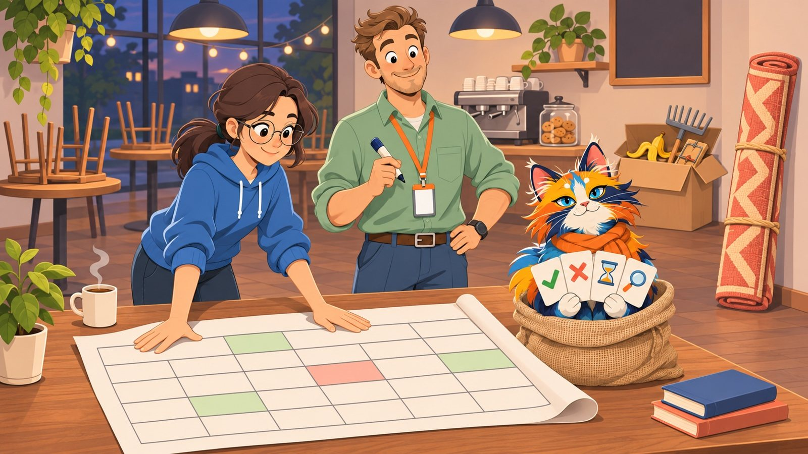

Сначала вспомним
Тест новой витрины с десертами: вилка эффекта на заказы от −0.8 до +3.4%. Что честно сказать?
Вилка широкая и задевает ноль: пока не знаем. Данные согласуются и с нулём, и с +3%. Честно так: «эффект не отличили от нуля; больше +3.4% он вряд ли». Это было в шаге 6.
Котейка прогнал 20 A/A‑тестов: обе группы видят одно и то же. В одном вышло p = 0.03. Что это значит?
В мире без эффекта p меньше 0.05 выпадает примерно в одном тесте из двадцати. Один пустой тест из двадцати побеждает. Это было в шаге 7, и сегодня это пригодится: каждый лишний взгляд на отчёт — ещё один такой тест.
Шаг 10 из 11
Когда зелёное врёт
После шага ты сможешь записать правила теста до первых цифр и заметить, когда зелёная клетка врёт.

Боб открыл отчёт на пятый день и увидел зелёную клетку. Деление честное, всё посчитано верно. Почему этой клетке ещё нельзя верить?
Ловушек в этом шаге много, и встречаются они постоянно. Но почти все лечатся одним правилом: что считать успехом, решаем до того, как увидели цифры. Пойдём по порядку: когда смотрим на отчёт, на что смотрим, кого сравниваем и что принимаем за эффект. А читать готовый отчёт и решать будем в шаге 11.
Боб смотрит отчёт каждое утро

Тест запланирован на 30 дней. Но Боб открывает отчёт каждое утро и готов выкатить фичу в первый же день, когда разница станет значимой.
Возьмём A/A‑тест: обе группы видят одно и то же, эффекта нет. Если смотреть каждый день все 30 дней и остановиться при первом «значимо», как часто Боб найдёт эффект, которого нет?
Выбери вариант.
Тридцать утр с отчётом
Линия — насколько разница между группами больше обычного шума, день за днём. Серая полоса — обычный шум. Если линия вышла из полосы, отчёт в этот день показывает «значимо».
Каждый день — новый шанс, что шум выйдет за полосу
Срок теста заранее — калькулятор MDE: подставь конверсию, эффект и трафик, он посчитает срок теста; ссылкой на расчёт можно поделиться.
Дюжина метрик и два правила решения
В отчёте теста 12 метрик: заказы, выручка, средний чек, отмены… Снова A/A‑тест, эффекта нет нигде. Цветом отмечены «значимые» разницы. Решение можно принимать по-разному. Правило Боба: выкатываем, если «значимо» хоть что‑то. Правило Алисы: до запуска выбрали одну главную метрику — конверсию в заказ — и решаем только по ней.
Главная метрика выросла, а что сломалось?

Новый экран оформления: конверсия в заказ +4%, значимо. Катим!
Изменение редко бывает точечным: ускорили оформление — нагрузка переехала на кухню и курьеров. Поэтому кроме главной метрики заранее выбирают несколько сторожевых: тех, что не должны ухудшиться.
| Метрика | Контроль | Тест | Разница | Вилка 95% |
|---|---|---|---|---|
| Конверсия в заказ · главная | 10.0% | 10.4% | +4.0% | [+2.6; +5.4] |
| Время доставки · сторожевая | 38 мин | 43 мин | +13% | [+10; +16] |
| Отмены · сторожевая | 3.0% | 3.6% | +20% | [+12; +28] |
| Оценка заказа · сторожевая | 4.62 | 4.51 | −2.4% | [−3.1; −1.7] |
Катим?
Новый экран так хорошо подгоняет к заказу, что кухня и курьеры не успевают: доставка дольше, оценки ниже, а из 1000 заказов отменяют 36 вместо 30. Сначала поднимаем мощность кухни и курьеров или разносим нагрузку, потом проверяем снова. Сторожевые метрики выбирают до запуска, вместе с главной.
Идея из книги: Джозеф О’Коннор, Иан Макдермотт, «Искусство системного мышления»
В среднем ноль, а внутри — нет
Акция «второй кофе в подарок» за три недели дала 0%. Выключаем.

Подожди. Давай посмотрим по кафе.
Эффект акции во всех кафе вместе — ноль
Алиса разрезала результат на 30 срезов: кафе, города, дни недели, iPhone и Android. В кафе у вокзала эффект +15%, p = 0.04. Что делать?
Срез, найденный задним числом среди тридцати, — это гипотеза, а не результат. Её проверяют новым тестом, где кафе у вокзала — главная цель с самого начала.
Идея из книги: Владимир Савельев, «Статистика и котики»
Поисковый тест ищет идеи, подтверждающий их проверяет
Ошибка — делать выводы по поисковому тесту так, будто он подтверждающий. Определи, какой тест перед тобой.
Запустили новую главную страницу и смотрим 25 метрик в 10 срезах: где что изменилось.
Много метрик и срезов — это поиск. Найденное здесь записываем в гипотезы и проверяем следующими тестами.
До запуска записали: «Кнопка „Повторить заказ“ в кафе у вокзала поднимет заказы на гостя. Главная метрика — заказы на гостя, 21 день, решение по 95% вилке».
Одна гипотеза, одна главная метрика и правило решения, записанные до запуска, — это подтверждающий тест. По нему уже можно принимать решение.
Идея из книги: Дэвид Шпигельхалтер, «Искусство статистики»
Если бы вышло наоборот — что бы ты сказал?
Конверсия выросла — значит, новое меню понятнее. А если бы упала — значит, гости внимательнее его изучают. В любом случае меню удачное!
Что не так с рассуждением Боба?
Если подтверждением считается и рост, и падение, тест ничего не проверяет. Полезный вопрос к себе: «Если бы результат был обратным, принял бы я его как подтверждение?» Если да — проверки нет.
Ещё одна ловушка того же рода: мы привыкли искать подтверждения, а не опровержения.
Правило Боба: «Если гость получил промокод, он сделал повторный заказ». На каждой карточке — гость: с одной стороны, был ли промокод, с другой — был ли повторный заказ. Какие карточки нужно перевернуть, чтобы проверить правило?
Правило нарушает только гость, который получил промокод, но не сделал повторный заказ. Поэтому переворачиваем карточку 1 «получил промокод», чтобы узнать, что на обороте, и карточку 4 «не сделал повторный заказ», чтобы узнать, был ли промокод. Большинство людей выбирают 1 и 3: мы ищем подтверждения, а проверяют правило опровержения.
Идея из книги: Джозеф О’Коннор, Иан Макдермотт, «Искусство системного мышления»
Задача о поездах
По железной дороге ходят поезда двух видов, поровну: короткие пассажирские по 5 вагонов и длинные товарные по 45 вагонов. Котейка в случайный момент выглядывает к переезду — а там идёт поезд.
Какой поезд Котейка будет видеть чаще?
Товарный поезд в 9 раз длиннее, значит, в 9 раз дольше стоит перед глазами. В случайный момент Котейка видит его в 9 раз чаще, хотя поездов поровну. Так же и в данных: если брать «кто сейчас в приложении», чаще попадаются те, кто сидит в нём долго. Типичный человек в логах — не типичный гость.
Идея из книги: Джозеф О’Коннор, Иан Макдермотт, «Искусство системного мышления»
Делили пополам, а получилось неровно

Тест на новый экран оплаты, сплит 50/50. В отчёте миллион пользователей: в контроле 508 000, в тесте 492 000, то есть 50.8% против 49.2%. Мелочь? Проверим, бывает ли такое случайно.
Где оказывается доля теста при честной монетке
При миллионе пользователей доля теста при честной монетке обычно держится в пределах 49.9–50.1%, а наши 49.2% отстоят от середины на 16 ширин. Случайно так не бывает, значит, где‑то баг: например, новый экран падает у части людей и они не доезжают до логов. Тогда в тесте остались самые «живучие» пользователи, и сравнение нечестное.
Лучше в каждой группе, хуже в сумме
Функцию «Предзаказ» не тестировали, а просто дали включить желающим. Через месяц сравнили тех, кто включил, и тех, кто нет.
У тех, кто включил предзаказ, заказывают 22%, а у остальных 38%. Функция вредит, выключаем!
Давай разделим гостей на постоянных и новичков.
Почему в сумме «включившие» заказывают реже, хотя и среди постоянных, и среди новичков — чаще?
Среди включивших 800 новичков из 1000, среди остальных — только 200. Новички заказывают в три-четыре раза реже постоянных, и это тянет вниз общую долю. Так бывает, когда группы набирают сами себя. Монетка не делает группы одинаковыми. Она делает различия между ними случайными, а случайность входит в шум, который мы научились мерить в шагах 3–6. Поэтому в честном A/B‑тесте такой переворот из-за состава групп маловероятен.
Слишком хорошо — сначала ищем баг
Один и тот же отчёт, две реакции.
Рекорд: новый экран корзины дал +12% выручки за неделю!
Аномалия: +12% за неделю. Ищу баг.
Почему Алиса не радуется? У больших компаний удачные изменения обычно сдвигают главные метрики на 0.1–1%. В отчёте Боба ширина колокола разницы 1.5%, и +12% — это 8 ширин. Такие скачки чаще оказываются ошибкой в данных, чем гениальной фичей.
p меньше 0.001 — значит, это не случайность. Катим!
Что не так в рассуждении Боба?
p‑value отвечает на вопрос, удивительна ли разница в мире без эффекта. Шум оно отсекает, а ошибки в подсчёте — нет: если в тесте заказы записываются дважды, разница будет и огромной, и «значимой». Поэтому сначала проверяем данные, потом радуемся.
Идея из книги: Ron Kohavi, Diane Tang, Ya Xu, «Trustworthy Online Controlled Experiments»
Кладбище тестов
Одну и ту же хорошую идею проверяют в 20 разных командах. Настоящий эффект +3%, но тесты короткие: уверенно они замечают только эффекты от 6%. Каждая команда выкатывает фичу, если её тест «победил», а остальные тесты отправляются на кладбище. Победители пишут свою цифру в план роста. Алиса предлагает сначала перепроверить каждую победу повторным тестом: что он покажет?
Выкатывают только тех, кому шум подыграл
За год выкатили 5 фич, каждая победила примерно с +6%. Чего ждать от общего роста заказов?
У победителей шум подыграл эффекту, поэтому их цифры завышены, а сумма приростов выкаченных фич в среднем больше реального роста. Важные победы стоит перепроверять повторным тестом.
Идея из книги: Майкл Херцог, Майкл Фрэнсис, Аарон Кларк, «Статистика и планирование эксперимента для непосвящённых»
После плохой недели всё растёт само
Прошлая неделя была провальной, и мы запустили тест акции. За неделю заказы в тесте выросли на 9%!
После провала выросли обе группы, а не только тест
Что на самом деле показал тест?
Провальная неделя — это отчасти невезение: погода, праздник, сбой. На следующей неделе всё само откатывается к обычному уровню. Это регрессия к среднему из шага 1. Эффект акции — только разница с контролем: из 1000 заказов контроля в тесте примерно 1009, то есть около +1%. Остальной рост — откат после провала.
Когда смотреть на результат
Эффект не всегда виден сразу и не всегда держится. Две истории:
Что попадёт в отчёт, зависит от дня, когда смотрим
Как выбрать, сколько длится тест?
Срок теста выбирают до запуска: он должен захватить и всплеск новизны, и момент, когда эффект может только начаться. По первым дням не судим. Обычно это не меньше двух полных недель, а для редких действий — дольше.
Идея из книги: Саманта Клейнберг, «Почему»
В пилоте работало — почему на всех нет?
В пилоте на трёх кафе бесплатная доставка дала +15% заказов. Запускаем на всю сеть из 40 кафе!
У сети общий пул курьеров. В пилоте лишние заказы трёх кафе курьеры легко развозили. Двигай ползунок: на сколько кафе включаем бесплатную доставку?
Чем больше кафе, тем дальше реальность от пилота
Что проверить перед тем, как раскатывать фичу из пилота на всех?
Пилот показывает эффект в своих условиях: курьеров хватает, кафе выбраны удобные, все стараются. При раскатке условия меняются. Поэтому раскатывают постепенно и смотрят на общие ресурсы — курьеров, кухню, поддержку.
Идея из книги: Саманта Клейнберг, «Почему»
Правила — до цифр
- Не подглядываем. Срок теста выбираем по MDE до запуска и решаем в конце. По ходу смотрим только на поломки или по заранее записанному плану.
- Одна главная метрика и 2–3 сторожевые, выбранные заранее. Из 12 метрик хоть одна «прокрасится» почти в половине A/A, а главная — в 5%.
- Срез, найденный задним числом, — гипотеза для нового теста, а не вывод.
- Записываем до запуска, что будет успехом и что провалом. Если любой исход — «успех», проверки нет.
- Доли групп сверяем с планом. Расходятся сильнее, чем бывает случайно, — ищем баг, даже если всё зелёное.
- Слишком хорошо — сначала ищем баг. Малое p исключает шум, но не ошибку подсчёта.
- Победители завышены: сумма выкаченных побед в среднем больше реального роста.
- Эффект — только разница с контролем. Рост после плохой недели, всплеск новизны и пилот на трёх кафе обманывают.
Новые названия:
- Подглядывание
- остановка теста при первом «значимо» вместо запланированного конца
- Множественные сравнения
- много метрик или срезов сразу, из-за чего случайные «победы» становятся частыми
- Сторожевая метрика
- метрика, которая не должна ухудшиться, даже если главная выросла
- SRM
- sample ratio mismatch, перекос групп: доли расходятся с планом сильнее, чем бывает случайно, значит, где‑то баг
- Закон Твимана
- если цифра выглядит слишком интересно, сначала ищи в ней ошибку
